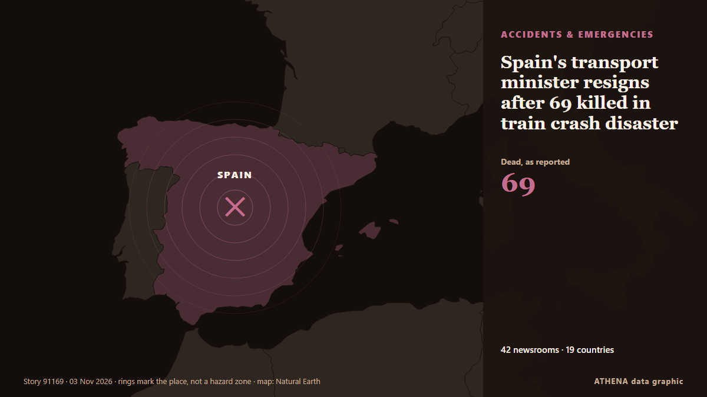

Spain's transport minister resigns after 69 killed in train crash disaster

Dr Marta Shahbazi was one of 69 people killed in the devastating crash last week. from Birmingham Mail
Reported independently by 51 outlets in 24 countries since 1 Nov, first by Birmingham Mail; coverage is fading. ATHENA rates the risk high (6.5/10), driven mainly by the severity of the harm described and its geographic and sector reach. Confidence is 87% (high), with 51 independent outlets corroborating it and an average source reliability of 74%. Newsrooms by country: United Kingdom (11), Spain (5), Brazil (4). Coverage: 1 Nov to 3 Nov, 56 hours.
Why it matters: Legal and policy changes alter rights, obligations and public services for the people they reach.
What changed: 41 new reports from 35 newsrooms in the 24 hours to 4 Nov.
First reported as: UK scientist killed in horror Spain train crash was on her way to collect prize
At a glance
Selected, scored and written by ATHENA's published methodology. No editor intervenes in individual events. How this is produced ›
| 01 Nov 12:16 UTC | 5 |
|---|---|
| 01 Nov 15:16 UTC | 7 |
| 01 Nov 18:16 UTC | 0 |
| 01 Nov 21:16 UTC | 0 |
| 02 Nov 00:16 UTC | 8 |
| 02 Nov 03:16 UTC | 0 |
| 02 Nov 06:16 UTC | 2 |
| 02 Nov 09:16 UTC | 5 |
| 02 Nov 12:16 UTC | 2 |
| 02 Nov 15:16 UTC | 0 |
| 02 Nov 18:16 UTC | 0 |
| 02 Nov 21:16 UTC | 2 |
| 03 Nov 00:16 UTC | 0 |
| 03 Nov 03:16 UTC | 0 |
| 03 Nov 06:16 UTC | 0 |
| 03 Nov 09:16 UTC | 5 |
| 03 Nov 12:16 UTC | 0 |
| 03 Nov 15:16 UTC | 1 |
| 03 Nov 18:16 UTC | 11 |
| 03 Nov 21:16 UTC | 17 |
| 04 Nov 00:16 UTC | 5 |
| 04 Nov 03:16 UTC | 1 |
| 04 Nov 06:16 UTC | 1 |
| 01 Nov 12:32 UTC | 4.8 |
|---|---|
| 01 Nov 13:19 UTC | 5.8 |
| 02 Nov 00:45 UTC | 6.0 |
| 02 Nov 08:46 UTC | 6.3 |
| 02 Nov 15:06 UTC | 6.3 |
| 04 Nov 00:47 UTC | 7.5 |
| 04 Nov 10:43 UTC | 6.5 |
| 04 Nov 10:43 UTC | 6.5 |
Why these numbers
Importance
Risk
Confidence
The reporting — who reported it, and when
headline as published · opens the original- Birmingham Mail · United KingdomUK scientist killed in horror Spain train crash was on her way to collect prize
- Sky News (World) · United KingdomUniversity of Cambridge scientist died in Spain train crash
- The Independent · United KingdomBritish scientist among 69 killed in Spain train disaster was travelling to collect prestigious award
- The Olive Press · Spain‘Inspiring’ Cambridge University scientist on her way to collect award for pioneering IVF research among 69 killed in Toledo train disaster
- The Guardian · United KingdomTributes paid to ‘inspiring’ Cambridge scientist who died in Spain train crash
- Evening Standard (London) · United KingdomUniversity of Cambridge scientist died in Spain train crash
- CGTN (World) · ChinaSpain's rail crisis: 'It's like Russian Roulette'
- BBC News · United KingdomUniversity of Cambridge scientist among those who died in Spanish train crash
- Bristol Post · United Kingdom'Brilliant' Cambridge scientist killed in Spanish train crash tragedy
- Manchester Evening News · United KingdomCambridge professor confirmed dead after Spain train crash
- MyJoyOnline · GhanaCambridge scientist dies in Spanish train crash
- Chronicle Live (Newcastle) · United KingdomCambridge professor confirmed dead after Spain train crash kills 69 people
- New Straits Times · MalaysiaOfficial: Four US citizens, Canadian among Spain train crash dead
- CBS News (World) · United States4 Americans among dozens killed in train crash in Spain, officials say
- The Guardian · United KingdomSpain train crash: US, Japan and Canada citizens among dead, authorities say
- Mainichi (English) · Japan1 Japanese confirmed dead in Spain train crash: gov't official
- Free Malaysia Today · MalaysiaFour US citizens, Canadian among victims of deadly Spain train crash
- The Straits Times · SingaporeFour US citizens, Canadian among Spain train crash dead: Official
- The Rio Times · BrazilFour Americans Among 69 Dead in Spain Crash
- The Local Spain · SpainToday in Spain: A roundup of the latest news on Monday
- The Local Spain · SpainFour US citizens and one Canadian among Spain train crash dead
- The Local Spain · SpainSpain’s train drivers call more strike days following crash
- Anadolu Agency (English) · TurkeySpain identifies 66 of 69 victims of deadly high-speed train crash
- The Canadian Press (via CityNews) · Canada4 Americans and 1 Canadian among the 69 dead in Spain’s train collision
- CBC News (alternative feed) · CanadaCanadian among the dead in Spanish high-speed rail crash
- The Globe and Mail · CanadaOne Canadian among the 69 dead in Spain’s high-speed train collision
- ABC News (International) · United States4 Americans and 1 Canadian among the 69 dead in Spain's train collision
- Global News (World) · CanadaCanadian national, 4 Americans among 69 dead in Spain train collision
- CGTN (World) · ChinaAll 69 victims of Spain's Urda train collision identified
- China Daily — page reader · ChinaAll 69 victims of Spain's Urda train collision identified
- The Rio Times · BrazilSpain Election Odds Put Feijóo at 84%
- The Straits Times · SingaporeSpain to reduce Madrid-Seville trains until European management system installed
- Cyprus Mail · CyprusSpain readies aid for rail crash victims, transport minister to face lawmakers
- ABC News Australia · AustraliaTwo Australians dead after high-speed train crash in Spain
- Sydney Morning Herald · AustraliaTwo Australians confirmed dead in horror Spain train crash
- The Rio Times · BrazilSpain Rail Minister Defends Line After Crash
- Sydney Morning Herald · AustraliaAustralian news live: Two Australians confirmed dead in Spanish train crash; America votes in midterm elections
- The Guardian · United KingdomTwo Australians confirmed dead in Spain’s high-speed train crash
- The Rio Times · BrazilSpain’s Rail Minister Quits Over Train Crash
- The Olive Press · SpainSpain’s transport minister Oscar Puente resigns over Toledo train disaster that killed 69 people